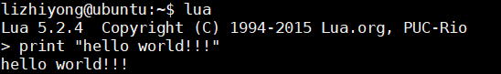

5.1 lua语言介绍
part 1
part 2
1.Lua简介
Lua是一种可嵌入、轻量、快速、功能强大的脚本语言。它支持过程式编程、 面向对象编程、函数式编程、数据驱动编程和数据描述（data description）。
Lua将简洁的过程式语法和基于关联数组、可扩展语义的数据描述语法结构结合了起来。 Lua是动态类型的语言，它使用基于寄存器的虚拟机解释和运行字节码（bytecode），并使用增量垃级回收（incremental garbage collection）机制自动管理内存。这些特点使得Lua很适合用于配置、脚本化、插件化和快速构造原型的场景。
Lua是第一个由第三世界国家（巴西）开发者开发的流行度很高的语言（and the leading scripting language in games）。
Lua解释器只有2w+多行ANSI C/C++代码，可执行文件200+ KB大小。
Lua脚本语言，运行依托于宿主语言，可以是c++，c#，golang等，只要实现了Lua解释器就可以。
Lua不像python，没有前向兼容的包袱，但是也给开发人员带来了不便。
Lua语言应用在那些方面的开发
1.比如游戏引擎领域的cocos2d-x、unity，由于引擎自身使用的c++或者c#作为编写语言，游戏前端发布后，发现bug或者发布新逻辑，都需要重新出包，周期过长，lua作为脚本语言，可以以资源的形式下载，重新加载运行，周期快，且效率损失有限；
2.服务端使用，比较火的也就是nginx+lua的形式，后来有人做了框架openresty，基本也是利用nginx的高性能+lua脚本的灵活性，逻辑修改之后只需要触发重新加载脚本就可以，开发运行效率都比较高，相比传统c++、java等需要重新编译部署，开发效率高很多。
那些知名项目应用了Lua语言
- openresty (nginx的lua模块)
- redis支持服务端lua脚本
- PostgreSQL支持服务端Lua脚本
- LuaTeX，基于TeX的排版引擎
- 迅雷也在用
- 游戏开发：云风的skynet
- MediaWiki（维基百科所使用的软件）大量使用Lua编写的模块，用于生成特定的页面内容
- Vim、WeChat、Wireshark也支持Lua脚本编写插件
- openwrt的路由器也是用lua开发的配置路由器的UI
Lua官方于2011年发布的5.2和2015年发布了5.3版本，和用户规模很大的2006年发布的5.1相比，改动很大，在Lua语法和C API方面都互不兼容。以下所有的教程说明都是基于5.2版本的。
2.准备Lua运行环境
在Linux系统安装Lua，使用下面的命令下载并生成Lua程序：$ wget http://www.lua.org/ftp/lua-5.2.3.tar.gz
$ tar zxf lua-5.2.3.tar.gz
$ cd lua-5.2.3
$ make linux test
在其它系统上安装Lua时，比如aix，ansi，bsd，generic，linux，mingw，posix，solaris，你需要将make linux test命令中的linux替换为相应的系统平台名称。
假设我们已经有一个文件 helloWord.lua ，文件内容如下：
print("Hello World!")
我们先使用cd命令切换至 helloWord.lua文件所在的目录，然后生成并运行该文件：
$ lua helloWorld
执行上面的命令，我们可以看到如下的输出：
hello world
3.基础概念
3.1.常量和标识符
语言关键字
and, break, do, else, elseif, end, false, for, function, if, in, local, nil, not, or, repeat, return, then, true, until, while其它标识符
\+ \- \* / % ^ # == ~= <= >= < > = ( ) { } [ ] ; : , . .. ...
- 常量字符串使用 ' 或 " 分隔，其中可以使用类似 C 语言的转义字符序列：
\a, \b, \f, \n, \r, \t, \v, \\, \", \ddd, \0
- 作为惯例，Lua 把以 _ 字符开始全部使用大写字母的变量名，保留为内部全局变量；
_VERSION
- Lua使用双精度浮点数表示数字常量，数据常量可以使用十六进制或科学计数法：
3, 3.0, 3.1416, 314.16e-2, 0xff, 0x56
- Lua注释有短注释和长注释两种注释方式：
-- short comment
--[[
this is a very loooooooooooooong
comment
]]
3.1.变量和数据类型
Lua是一个动态类型语言，也就是说：
- 变量没有类型信息，但是值有类型信息；
- 代码中没有类型定义语句，类型信息由值携带；
- 所有的值都是first-class（基本类型）的，它们可以存储在变量中、作为参数传递给其它函数或者作为函数的返回值。
Lua提供了8种基础类型：
nil - 此类型下定义的值只有nil，它的主要属性就是：和其它值不一样。通常，nil用在其它有意义的值缺失的场景，有点儿像C++语言的空引用的意思，我们知道C++没有办法表示空引用，但是Lua用nil表示。
boolean - 此类型下定义的值有false和true 。 在Lua的条件表达式里， 除了nil和false为”假值“外，其它类型都是”真值“（比如， 0 和 '' 在Lua中都是”真“值）。
number - Lua默认使用双精度浮点型存储该类型的值。
string - 此类型的值可以由任何8-bit字符组成。Lua在内存中为相同的字符串保留一份数据，同时，Lua不允许对字符串常量进行修改。
function - 此类型的值是使用Lua或者C编写的函数。
userdata - 此类型的值是C语言数据，从Lua的角度看，这些值对应一块无预定义行为的裸内存。Lua不允许使用Lua代码创建或者修改userdata ，但是允许使用 C API 实现这样的功能。另外，用户可以为userdata设定metatable ，定义更多可以在它上面执行的操作，由此可见userdata用于C语言写的程序和Lua程序交换数据。
thread - 此类型的值是Lua线程，Lua通过它实现协程功能。
table - 此类型的值是关联数组（associative array），该类型有数组部分和字典部分组成。数组部分保存索引为整数，并且从1开始连续的数据；字典部分保存剩余其它数据（包括索引是整数，但是不在 [1, #table] 的数据），table是Lua中最重要的数据类型了。
table, function, thread 和 userdata 类型的值在赋值、参数 传递、函数返回值等操作中，使用对它们引用，而非拷贝；
可以使用type()函数得到描述值类型的字符串；
在运行时，Lua会自动根据上下文对string和number类型值互相转换类型（作为强类型语言，Lua只支持如下隐式转换）：
- 在算术运算中，将string类型转换为number类型；
10 + "10" - 当number类型用于需要string类型参与的场合时，将number类型转换为string ；
- 在算术运算中，将string类型转换为number类型；
-- valid
10 .. " boxes"
-- invalid
10 == "10"
更多初级内容，请移步至: lua入门
4.Lua调用C/C++代码
Lua是一门动态脚本语言，运行依托于宿主语言，可以是c，c++，c#，golang等，只要实现了Lua解释器就可以。所以，Lua从设计来讲就是动态脚本语言，正是因为是解释性语言，所以它更充当了这些宿主语言的“缝合”作用，是为“胶水”性语言。那么我们首先来看一个示例，它是如何调用C/C++语言的呢？下文我们先看一个例子。4.1.运行的实例
哦，曾经Lee哥用Lua写测试用例，既然说到测试，那就要实现对一些外部设备进行模拟，还要实现与后台服务模块的通讯，这些实现用C/C++语言实现比较好，那整个整体是怎么样的呢？先看代码 :_path = ';../src/?.lua;'
extern_path = ';../src/test/?.so;../../third/lib/thrift/?.so;'
package.path = lua_path .. package.path
package.cpath = extern_path .. package.cpath
local proxy = require("libbcs_proxy")
--local g_ns_ip = "113.240.243.236"
local g_ns_ip = "192.168.107.117";
local g_ns_cluster_proxy_ip = "192.168.107.117";
local g_ns_port = 9000;
local g_dev_port = 9001;
local g_ns_log_conf_path = "../conf/log.conf";
local lu = require('luaunit')
EXPORT_ASSERT_TO_GLOBALS = true
-- sleep n milliseconds
function sleep(n)
os.execute("usleep " .. n*1000)
end
TestSetVolume = {}
function TestSetVolume:test_set_volume_with_exist_device_tc()
lu.assertEquals(proxy.init(g_ns_ip, g_ns_port, g_ns_log_conf_path), 0);
lu.assertEquals(proxy.create_dev(2001, g_ns_cluster_proxy_ip, g_dev_port), 0);
sleep(1000);
lu.assertEquals(proxy.load("03.set_volume_tc/setVolume_request.json", "03.set_volume_tc/setVolume_response.json"), 0);
lu.assertEquals(proxy.run(), 0);
sleep(500);
lu.assertEquals(proxy.check_dev_recvd(2001, "03.set_volume_tc/dev_2001_setvolume.json"), 0);
sleep(500);
proxy.uninstall();
end
function TestSetVolume:test_set_volume_less_than_0_tc()
lu.assertEquals(proxy.init(g_ns_ip, g_ns_port, g_ns_log_conf_path), 0);
lu.assertEquals(proxy.create_dev(2002, g_ns_cluster_proxy_ip, g_dev_port), 0);
sleep(1000);
lu.assertEquals(proxy.load("17.set_volume_less_than_0_tc/setVolume_request.json", "17.set_volume_less_than_0_tc/setVolume_response.json"), 0);
lu.assertEquals(proxy.run(), 0);
sleep(500);
proxy.uninstall();
end
function TestSetVolume:test_set_volume_big_than_100_tc()
lu.assertEquals(proxy.init(g_ns_ip, g_ns_port, g_ns_log_conf_path), 0);
lu.assertEquals(proxy.create_dev(2003, g_ns_cluster_proxy_ip, g_dev_port), 0);
sleep(1000);
lu.assertEquals(proxy.load("18.set_volume_big_than_100_tc/setVolume_request.json", "18.set_volume_big_than_100_tc/setVolume_response.json"), 0);
lu.assertEquals(proxy.run(), 0);
sleep(500);
proxy.uninstall();
end
function TestSetVolume:test_set_volume_with_no_exist_dev_tc()
lu.assertEquals(proxy.init(g_ns_ip, g_ns_port, g_ns_log_conf_path), 0);
lu.assertEquals(proxy.load("19.set_volume_with_no_exist_dev_tc/setVolume_request.json", "19.set_volume_with_no_exist_dev_tc/setVolume_response.json"), 0);
lu.assertEquals(proxy.run(), 0);
sleep(500);
proxy.uninstall();
end
lu.TABLE_EQUALS_KEYBYCONTENT = true
-- run your tests:
os.exit( lu.LuaUnit.run() )
从上文代码我们可以清楚看到，我们加载了libbcs_proxy.so（local proxy = require("libbcs_proxy")）库，这个库就是我们使用c/c++封装的动态库，那这个动态库提供哪些功能呢？我们来看一个测试用例：
TestNSProxysvrResendFunction = {}
function TestNSProxysvrResendFunction:test_nsproxysvr_resend_tc()
lu.assertEquals(proxy.init(g_ns_ip, g_ns_port, g_ns_log_conf_path), 0);
lu.assertEquals(proxy.create_dev(2222, g_ns_cluster_proxy_ip, g_dev_port), 0);
lu.assertEquals(proxy.disable_dev_send_response(2222), 0);
sleep(4000);
lu.assertEquals(proxy.load("31.nsproxysvr_resend_function_tc/request.json", "31.nsproxysvr_resend_function_tc/response.json"), 0);
lu.assertEquals(proxy.run(), 0);
sleep(500*10);
proxy.uninstall();
end
TestNSProxysvrResendFunction是lua语言中的一个table，lua中的table很神奇因为lua只有table一种数据结构，简单到吓死人。接着在TestNSProxysvrResendFunction中定义了一个test_nsproxysvr_resend_tc的测试函数，该函数首先调用proxy.init初始化了proxy模块(用C/C++实现的)，然后创建虚拟设备，完了之后，调用load函数加载测试用例所需要的消息定义的文件（这些文件是用json格式写的）， 内容如下：
// request文件
{
"cmd": "realPlay",
"cmdType": 0,
"data": {
"sessionId": "a42178dbee4147a8a7e42cc6bdc668e0",
"playURL": "rtsp://113.240.243.246/session2.sdp",
"devList": [{
"devNo": 2222,
"priority": 100
}]
},
"isAck": 1,
"source": "BCS",
"target": "NS"
}
// response文件
{
"cmd": "response",
"cmdType": 0,
"isAck": 0,
"retCmd": "realPlay",
"retCode": 200,
"retMsg": "success",
"source": "NS",
"target": "BCS"
}
其中request文件是发送消息的定义，response是回复消息的定义，那么我们的测试就是给后台发送一条消息，然后看看后台给我们的回复消息是否与response定义的一样，一样则通过，否则错误。
4.2.如何实现的
那么我们首先是把上文提到的libbcs_proxy封装成了一个so库，该so库实现了libbcs_proxy所有的函数定义，比如其中的init函数：
int init(lua_State* L)
{
const char * ip = luaL_checkstring(L, 1);
LUA_NUMBER port = luaL_checknumber(L,2);
const char * log_conf_path = luaL_checkstring(L, 3);
S_Logger::instance()->Init(std::string(log_conf_path));
int iport = 0;
lua_numbertointeger(port, &iport);
proxy = new BCSProxy(ip, iport);
ns_port_ = iport;
ns_ip_ = std::string(ip);
lua_pushinteger(L, 0);
return 1;
}
那么首先这里必须解释下，lua_State是什么东西，这个lua_State就是虚拟栈（很多地方也称为Lua的虚拟机，但是这是不正确的，实际上是虚拟机上的一个管理执行环境的状态机，本质就是我们后期架构师会讲到的一个协程），这个虚拟栈很用于Lua语言和C/C++语言之间交换参数用的。比如我们的测试用例cases.lua中：
lu.assertEquals(proxy.init(g_ns_ip, g_ns_port, g_ns_log_conf_path), 0);
lua代码中调用了init函数，那么这些参数g_ns_ip、g_ns_port和g_ns_log_conf_path就是在执行lua语言时首先压入到lua_Stata这个虚拟栈的；那么init函数是如何获取到这些参数的呢？那么Lua提供了很多的C API来获取这些虚拟栈的内容，详情可以参考官方的参考手册，部分API如下：
void luaL_checkany (lua_State *L, int arg);
lua_Integer luaL_checkinteger (lua_State *L, int arg);
const char *luaL_checklstring (lua_State *L, int arg, size_t *l);
lua_Number luaL_checknumber (lua_State *L, int arg);
const char *luaL_checkstring (lua_State *L, int arg);
void *luaL_checkudata (lua_State *L, int arg, const char *tname);
比如init函数的定义里就使用了luaL_checkstring(L, 1)获取第一个参数g_ns_ip的值，大家注意虚拟栈入栈的方向啊。那么调用完了之后，init函数的返回值如何传递给lua呢？还是通过虚拟栈来进行的，比如init函数就是通过lua_pushinteger把一个0值放入了虚拟栈，最后在我们的case里通判断返回值是否为0表示是否调用init函数成功。那入栈的C API有哪些呢？
void lua_pushboolean (lua_State *L, int b);
void lua_pushcclosure (lua_State *L, lua_CFunction fn, int n);
void lua_pushcfunction (lua_State *L, lua_CFunction f);
const char *lua_pushfstring (lua_State *L, const char *fmt, ...);
void lua_pushinteger (lua_State *L, lua_Integer n);
void lua_pushlightuserdata (lua_State *L, void *p);
void lua_pushnumber (lua_State *L, lua_Number n);
const char *lua_pushstring (lua_State *L, const char *s);
以上这些解决了C/C++和lua之间传递参数的问题了，那么我们再来看看init函数实现，最后一定要返回一个大于0的值，此处返回的1，表示我们的返回值个数是1个。
最后最重要的来了，我们这些C函数定义后，被编译成了so库，那么我们的Lua解释器是如何找到这些函数的呢？请看实现：
extern "C" int luaopen_libbcs_proxy(lua_State* L)
{
static const luaL_Reg functions[] =
{
{"load", &load},
{"init", &init},
{"run", &run},
{"uninstall", &uninstall},
{"create_dev", &create_dev},
{"check_dev_recvd", &check_dev_recvd},
{"check_dev_recvd2", &check_dev_recvd2},
{"dev_send_msg_to_ns", &dev_send_msg_to_ns},
{"disable_dev_send_heartbeat", &disable_dev_send_heartbeat},
{"disable_dev_send_response", &disable_dev_send_response},
{NULL,NULL} // 一定要以{NULL,NULL}
};
luaL_newlib(L,functions);
return 1;
}
我们一定要实现这个函数，而且格式要严格一样，比如luaopen_so库名称，这样在lua中调用requre加载这个so库时，会调用到该函数，且在这个函数里使用luaL_Reg导出C语言定义的函数，最后调用luaL_newlib把该函数表添加到虚拟栈上，lua通过虚拟栈找到这样的函数，发起调用，再一次我们看到了lua是使用Lua_State与C/C++交换数据的。
4.3.Luaunit的使用
luaunit是一个lua语言中非常流行的测试框架，他支持很多格式的测试报告输出，这些格式化的输出可以很好的利用于持续集成框架，比如Jenkins，Hudson等等。那如何使用呢？- step 1 : 在我们的测试源码文件中，比如cases.lua文件，在该文件中首先包含luaunit.lua文件
lu = require('luaunit') - step 2 : 其次在文件的最后写上下列语句去执行该cases.lua中实现的测试用例；
os.exit( luaunit.LuaUnit.run() ) - step 3 : 写测试用例，如下，必须以test开头去命名测试用例。
function testAdder()
f = adder(3)
luaunit.assertIsFunction( f )
luaunit.assertEquals( f(2), 5 )
end
也可以写测试套，测试套就是多个相关测试用例的一个分组，测试套支持setup和teardown方法。
package.cpath = package.cpath .. ";/usr/local/lib/?.so"
require('interface_BRKService')
require('TSocket')
require('TBufferedTransport')
require('TFramedTransport')
require('THttpTransport')
require('TCompactProtocol')
require('TJsonProtocol')
require('TBinaryProtocol')
require('liblualongnumber')
-- import luaunit
local lu = require('luaunit')
local client
local opt = {
host = '47.106.79.26',
port = '9090',
protocol = TCompactProtocol,
transport = TFramedTransport
}
TestProtocol = {}
function TestProtocol:setUp()
local socket = TSocket:new{
host = opt.host,
port = tonumber(opt.port),
timeout = 5000
}
assert(socket, 'Failed to create client socket')
local transport = opt.transport:new{
trans = socket,
isServer = false
}
local protocol = opt.protocol:new{
trans = transport
}
assert(protocol, 'Failed to create binary protocol')
client = BRKServiceClient:new{
protocol = protocol
}
assert(client, 'Failed to create client')
-- Open the transport
local status, _ = pcall(transport.open, transport)
assert(status, 'Failed to connect to serverle_code')
end
function TestProtocol:test_brk_list_travel_success()
--print( "called this unit case")
local r = client:brk_list_travel('15200599665')
lu.assertEquals(r.resultCode, 200)
lu.assertIsTrue(r.mileage > 0)
lu.assertIsTrue(r.discharge > 0)
lu.assertIsTrue(r.calorie > 0)
local mileage = "mileage is " .. r.mileage
print(mileage)
local discharge = "discharge is " .. r.discharge
print(discharge)
local calorie = "r.calorie is " .. r.calorie
print(calorie)
end
function TestProtocol:tearDown()
if client then
-- close the connection
client:close()
end
end
local runner = lu.LuaUnit.new()
runner:setOutputType("tap")
os.exit( runner:runSuite() )
从上面的代码我们可以看出在setup建立测试环境（准备通讯），在teardown负责对测试环境的清理，比如我们这里断开通讯。
- step 4 ：运行测试用例
lua cases.lua
运行测试用例可以有一些参数：
* -o : 指定测试报告输出格式，如以下格式：
text: the default output format
nil: no output at all
TAP: TAP format
junit: output junit xml
* -p ：挑选测试用例执行，后面跟测试用例名称
5.C/C++调用lua代码
作业1：brks工程所有的配置信息放入lua脚本里，然后brks工程从lua脚本中获取配置信息，比如下列代码中的：
int main(int argc, char** argv)
{
if (argc != 2)
{
printf("please input brks <log file config>!\n");
return -1;
}
if(!Logger::instance()->init(std::string(argv[1])))
{
printf("init log module failed.\n");
return -1;
}
else
{
printf("init log module success!");
}
std::shared_ptr<DispatchMsgService> dms(new DispatchMsgService);
dms->open();
std::shared_ptr<MysqlConnection> mysqlconn(new MysqlConnection);
mysqlconn->Init("127.0.0.1", 3306, "root", "123456", "dongnaobike");
BusinessProcessor processor(dms, mysqlconn);
processor.init();
std::function< iEvent* (const iEvent*)> fun = std::bind(&DispatchMsgService::process, dms.get(), std::placeholders::_1);
Interface intf(fun);
intf.start(9090);
LOG_INFO("brks start successful!");
for(;;);
return 0;
}
把上面代码的数据库的信息ip，端口号，账户，密码和数据库名称放入lua脚本中，还有brks监听的端口也放入lua文件中。
**作业2：我们现在的测试框架是使用thrift生成的lua代码开发的，那么把这个框架改成thrift生成cpp文件，把这个cpp文件封装成so文件，lua调用so库的接口去写测试用例。要求消息内容定义成json文件（比如request.json），后台反馈的消息也与我们定义的json文件（比如response.json）进行比对，如果一致则说明后台处理消息成功，否则失败。